Nadan Serenity · interior case study · two floors
A contemporary Kerala house built around an open-to-sky water court. The model below is drawn from the ground-floor plan; pick a room to see it built.
Build film
The same model, assembled in order: the plan on the plinth, walls rising, floors laid, furniture set down room by room, then the first-floor slab landing on top and being built out to the pool terrace. Finally the walls run to full height, the roofs close over, the travertine skin, timber box and the master's concrete frame go on, and the camera settles on the exterior.
The idea
The first scheme was quiet and pale. This one borrows the things that make a Kerala home feel alive and polishes them: red oxide floors buffed to a shine, hand-pressed Athangudi tiles from Chettinad, honey teak, brass that catches the light, and water at the centre of the plan.
The plan already had a deep dining hall between the kitchens and the bedrooms. Instead of filling it, the design opens it: a nadumuttam, the open courtyard of a traditional tharavad, becomes a black granite water court with four teak pillars and brass rain chains. Every room around it borrows its daylight and its sound of rain.
From there each space gets one clear move and a colour of its own, so walking through the house reads like a sequence of rooms, not one beige volume.
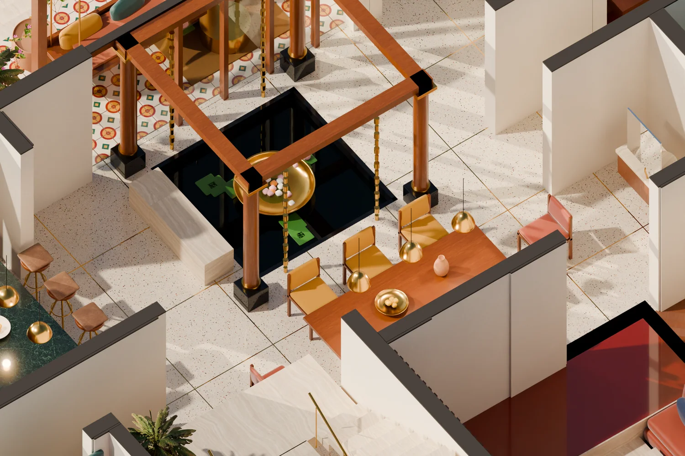
Open-to-sky nadumuttam: granite pool, brass uruli, lotus, rain chains on a teak ring beam.
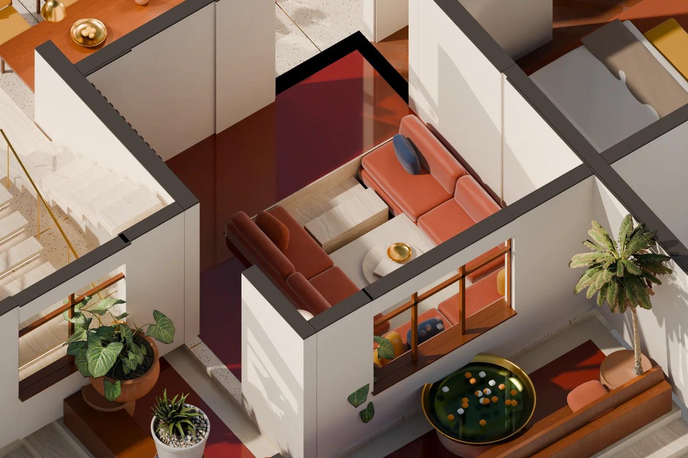
The living room drops 42 cm into a rust-velvet conversation pit on polished red oxide.
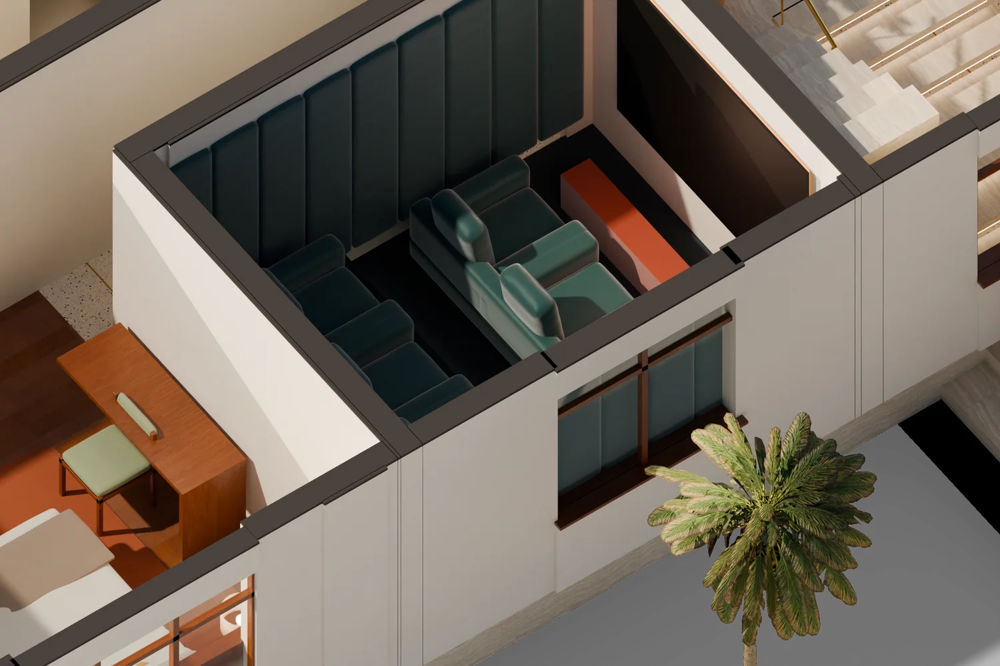
The theatre goes fully dark green: velvet walls, tiered seats, teak acoustic slats.
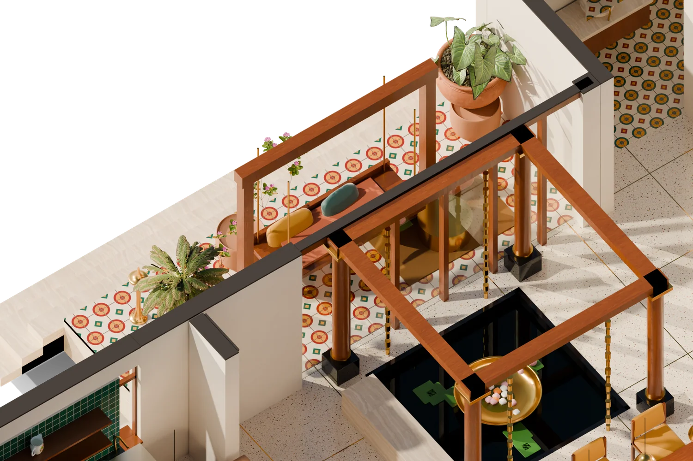
A teak oonjal on brass chains on an Athangudi tile floor, open to the north garden.
How it goes together
Every wall in the model was traced from the ground-floor drawing at 2.71 cm per pixel: 83 wall segments and 13 windows, checked against the labelled room sizes (the master bedroom measures 530 × 450, as drawn). The four views below are rendered from the same camera, so each layer sits exactly on top of the last.
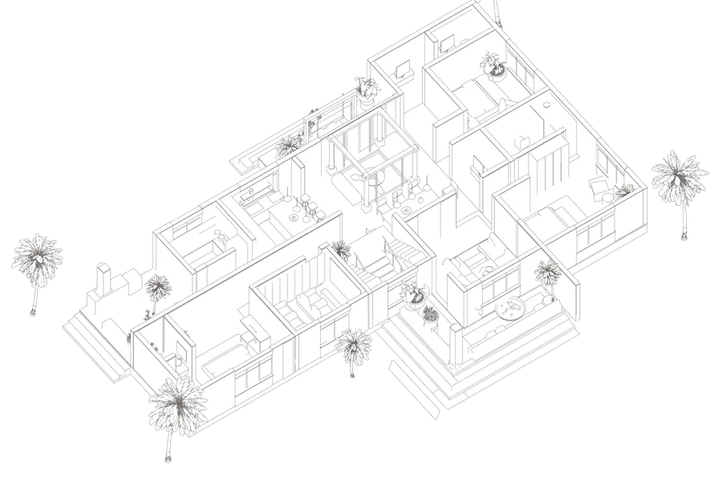
The plan extruded to a 2.5 m section cut. Dark wall caps read as the poché of the drawing.
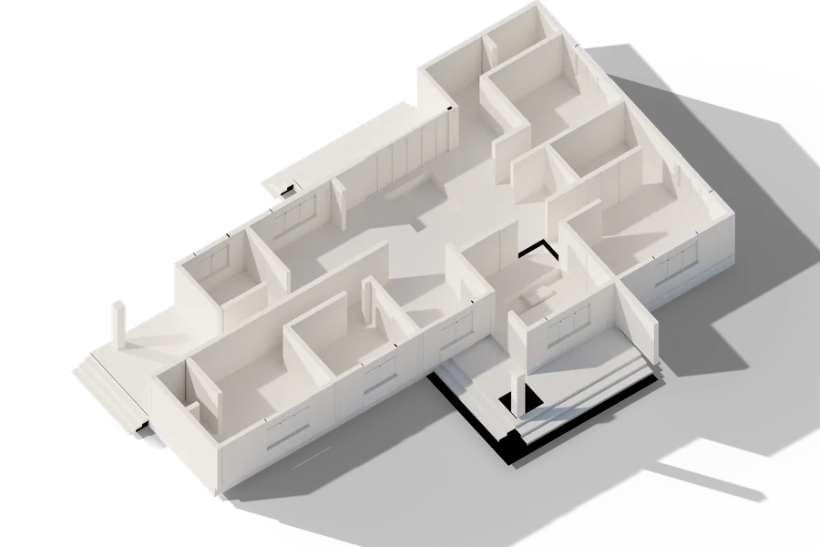
Plinth at +0.60, walls, the sunken court (−0.55) and the living pit (−0.42).
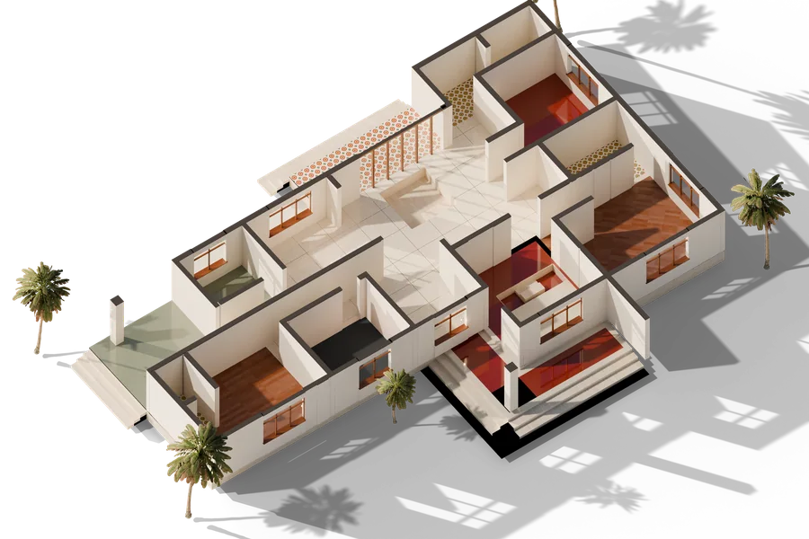
Six floor systems, teak windows and the folding veranda glazing.
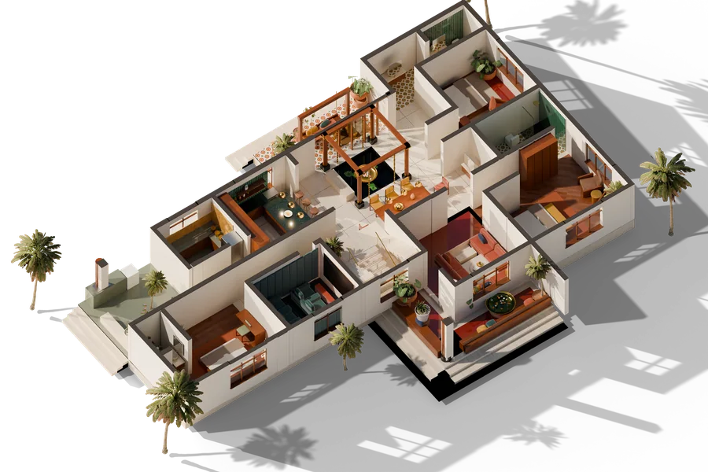
Furniture, textiles, plants, lamps and late-afternoon sun from the west.
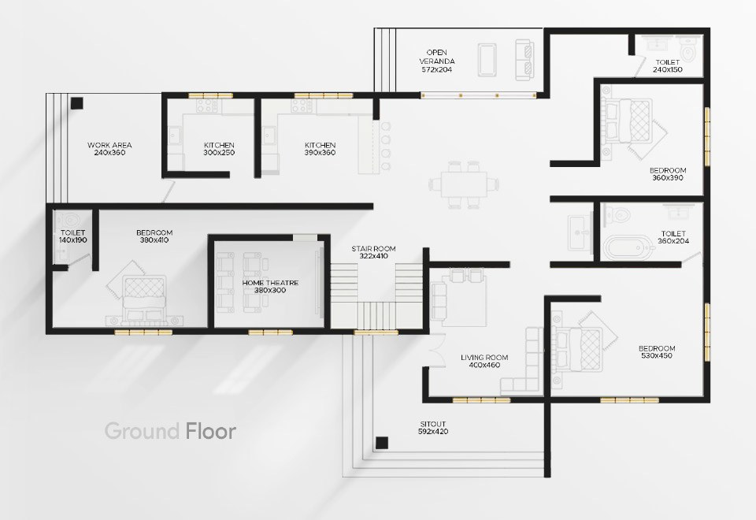
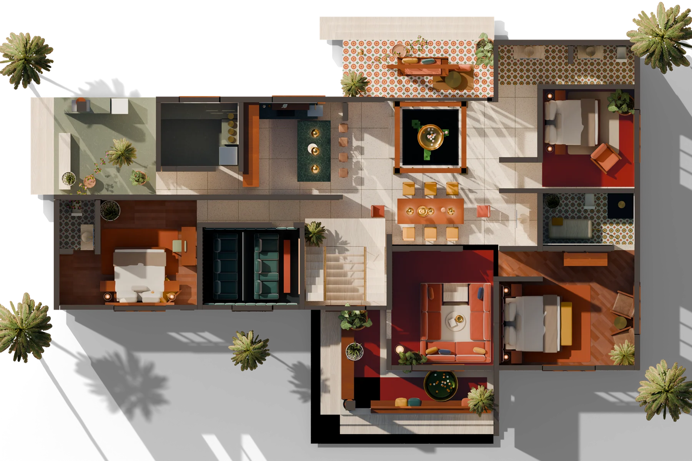
Room by room
Each photograph is taken from a camera placed inside the same model, so what you see here is the room in the cutaway above, at eye level. The small isometric in the corner shows where you are standing.
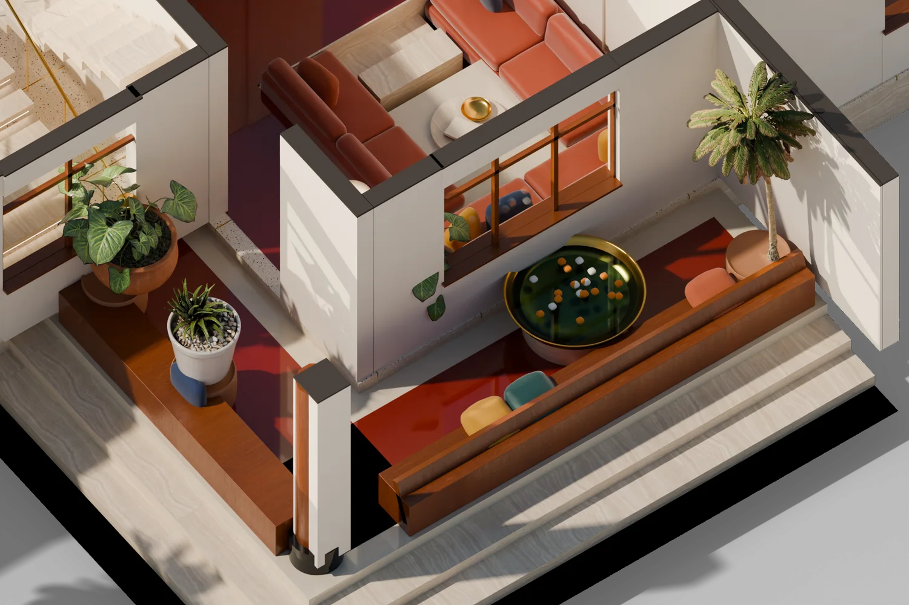
Red oxide with an ivory border, a teak charupadi bench along the open edges, and a brass uruli of marigolds at the door.
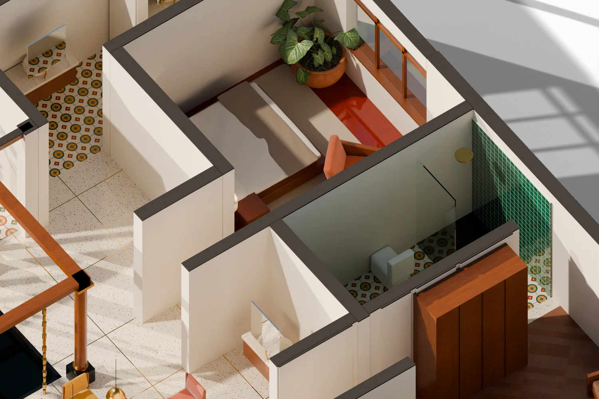
Red oxide bedroom with an oxblood headboard; a travertine tub against bottle-green zellige next door.
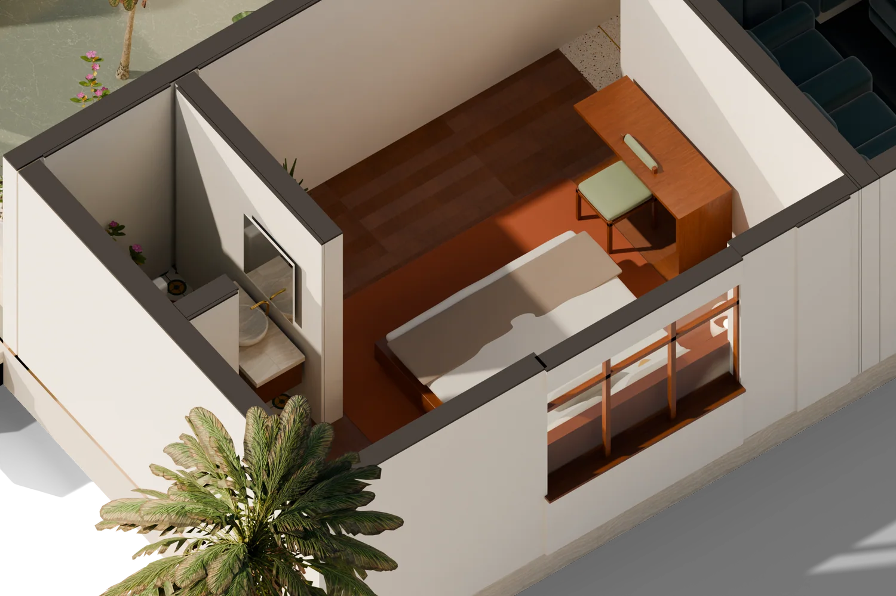
Honey teak boards, a teak headboard under the window, mustard and sage textiles.
First floor
The stair arrives in the middle of a 400 × 620 lounge. To the east is the master suite with its bath; to the west a second bedroom. Everything else is roof terrace: a plunge pool on the north-east deck, a teak pergola for dining at the west end, and a tiled balcony over the sitout. Switch the model at the top of the page to First to explore it.
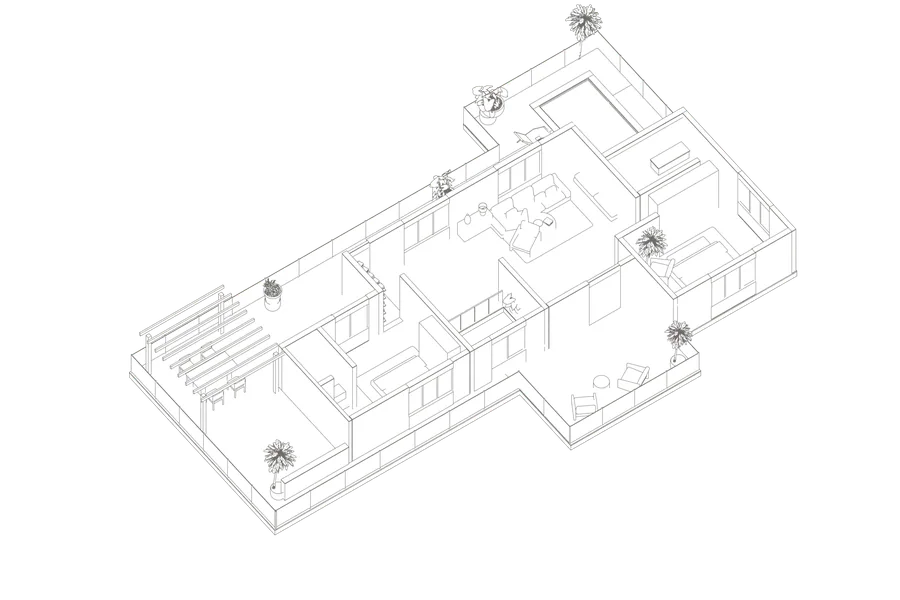
Traced from the first-floor plan and registered on the stair and the master bedroom below.
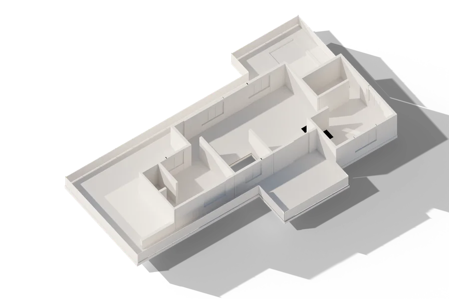
Slab at +3.90, room walls, parapet and the pool recess.
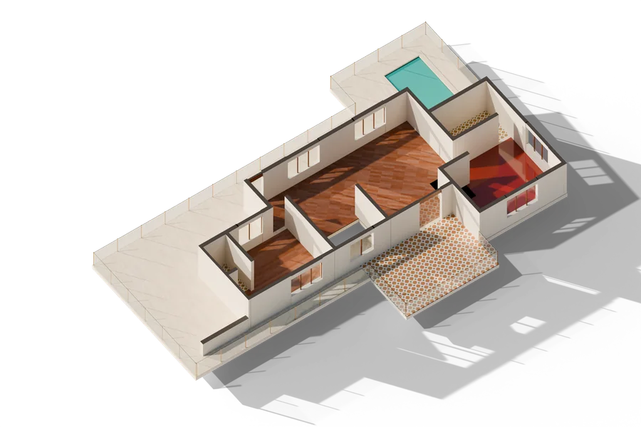
Teak herringbone, red oxide, travertine deck, Athangudi balcony, glass balustrade.
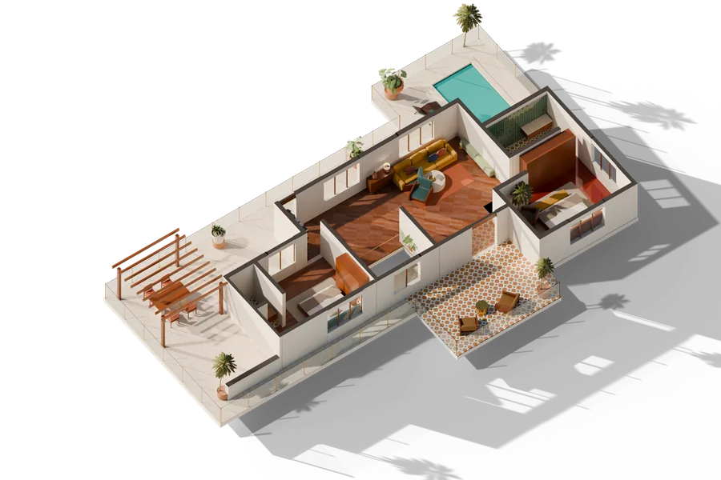
Lounge, two bedrooms, pergola dining and loungers by the pool.
Material board
Polished where you walk, soft where you sit, and brass wherever the light lands. Nothing is grey and nothing is high-gloss gold.
Room schedule
Sizes are the internal dimensions from the plan, in centimetres.
| Space | Size (cm) | Area | Floor | The move |
|---|